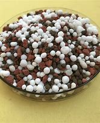
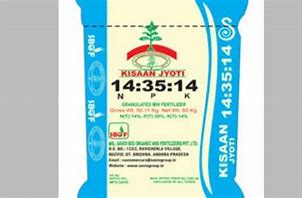
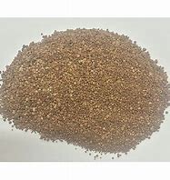
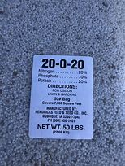
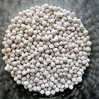
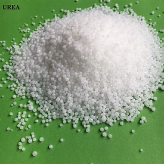

10:26:26 fertilizer is a complex mixture involving diammonium phosphate, potassium chloride and minor quantities of urea, and it is designed to supply three primary nutrients (i.e., N, P and K) adequate for the plant growth
 {%endif%} {%if data == 1%}14-35-14, by Coromandel Fertilisers Limited, Secunderabad, is a scientific complex Fertiliser, which has Nitrogen, Phosphate and Potash in the right ratio. It contains the highest nutrient content 63%, amongst all NPK complex fertilisers.14-35-14 contains Potash. It does not contain any filler material. It has the highest content of Phosphate – 35 %, among all NPK Complex Fertilisers.14-35-14 has earned the reputation of being a Scientific Complex Fertiliser 14-35-14 is suitable for a variety of crops like Paddy, Groundnut, Cotton, Sunflower, Wheat, Potato, Vegetables, etc.
 {%endif%} {%if data == 2%}7 17 17 fertilizer is a balanced fertilizer that is great for promoting healthy growth in a variety of plants, trees, and turfgrass. It contains equal amounts of nitrogen, phosphorus, and potassium, which are essential nutrients for plant growth
 {%endif%} {% if data == 3%}20 20 20 plant fertilizer is a water soluble fertilizer that contains 20% each of nitrogen, phosphorus, and potassium, which are three of the most important nutrients for plants. It is an all-purpose fertilizer that can be used for indoor and outdoor plants, vegetables, trees, and turf. However, it may be too much for some plants, so it is advisable to consider the specific needs of the crops before applying it. Different brands of 20 20 20 fertilizer may have different secondary ingredients that make each blend unique. It is not the same as 10 10 10 fertilizer, which has half the amount of nitrogen, phosphorus, and potassium.
 {%endif%} {%if data == 4%}This is the highest Nitrogen containing complex fertiliser with 28%.Nitrogen in two different forms through longer period of time. 19% of Nitrogen is in Urea form and 9% is in Ammoniacal form.25.2% out of 28% Phosphate is in water soluble form and easily available to plants.Ammonium Phosphate is coated over Urea prill, due to which the losses from Urea will be minimised.
 {%endif%} {%if data == 5%}DAP fertilizer, also known as Diammonium Phosphate, is a type of fertilizer widely used in agriculture and horticulture. It is a granulated form of fertilizer that contains high levels of phosphorous and nitrogen, making it an excellent choice for promoting plant growth and development. DAP fertilizer provides a balanced nutrient ratio, making it suitable for a variety of crops and plants.
The chemical formula of DAP fertilizer is (NH4)2HPO4, indicating that it is composed of two ammonium ions (NH4+) and one phosphate ion (HPO4^-). This combination of nutrients is highly beneficial for plants, as both nitrogen and phosphorous play crucial roles in their growth and development.
Urea fertilizer is a synthetic nitrogenous fertilizer that is manufactured with anhydrous ammonia. It has a high nitrogen content of 46 percent and is the most commonly used solid nitrogen fertilizer in the world. Urea fertilizer is a white, odorless, and soluble granule that can supply plants with nitrogen and encourage the growth of green, leafy plants. Urea fertilizer is neutral and can adapt to almost all the land.
 {%endif%}